Introduction
Ce rapport accompagne le relevé d'audit effectué sur le site « MeteoLux >».
La méthodologie d'audit employée repose sur le référentiel RGAA 4.1, consultable à l'adresse suivante : https://accessibilite.public.lu/fr/rgaa4.1/criteres.html
L'audit a été réalisé au moyen de l'utilisation de navigateurs web et d'outils spécialisés. Des tests de restitution ont également été effectués conformément à la base de référence définie par le RGAA 4.1.
Échantillon
L'audit a porté sur un échantillon de 12 pages pour le niveau double A (AA) :
| Nº page | Titre de la page | URL |
|---|---|---|
| P01 | Page d'accueil | https://www.meteolux.lu/ |
| P02 | Contact | https://www.meteolux.lu/fr/aide/contact/ |
| P03 | Mentions légales | https://www.meteolux.lu/fr/aide/aspects-legaux/ |
| P04 | Plan du site | https://www.meteolux.lu/fr/aide/plan-du-site/ |
| P05 | Actualité | https://www.meteolux.lu/fr/actualites/retour-sur-les-pluies-diluviennes-du-14-et-15-juillet-2021/ |
| P06 | Liste des actualités | https://www.meteolux.lu/fr/actualites/ |
| P07 | Météo en Europe | https://www.meteolux.lu/fr/meteo-en-europe/ |
| P08 | Dangers météorologiques | https://www.meteolux.lu/fr/vigilances/dangers-meteorologiques/ |
| P09 | Météo aéronautique - observation Luxembourg | https://www.meteolux.lu/fr/meteo-aeronautique/observations-luxembourg/ |
| P10 | Mes produits (connexion) | https://www.meteolux.lu/fr/mes-produits/ |
| P11 | Mes produits (connecté) | https://www.meteolux.lu/fr/mes-produits/aeronautique/ |
| P12 | Résultats de recherche | https://www.meteolux.lu/?page=recherche&recherche=pluie |
Environnement de test (base de référence)
Quelques critères RGAA, notamment ceux de la thématique JavaScript, incluent des tests de restitution à effectuer sur des technologies d'assistance associées à des navigateurs et des systèmes d'exploitation. Pour qu'un dispositif HTML / WAI-ARIA ou son alternative soit considéré comme compatible avec l'accessibilité, il faut qu'il soit pleinement fonctionnel, en termes de restitution et de fonctionnalités sur certaines combinaisons. Vous trouverez une explication détaillée de cet environnement de tests dans le document du RGAA 4.1.
Nous détaillons ci-dessous la base de référence utilisée pour réaliser les tests de restitution des composants du site.
Environnement de test – ordinateur
| Technologie d'assistance | Navigateur |
|---|---|
| NVDA 2021.4 | Firefox 93 |
| JAWS 2020 | Firefox 93 |
| VoiceOver (OSX 11.6) | Safari 15 |
Environnement de test — mobile
| Système d'exploitation | Technologie d'assistance | Navigateur |
|---|---|---|
| iOS 14.7 | Voice Over (dernière version) | Safari |
Accessibilité des pages auditées
Le site présente un niveau général d'accessibilité moyen.
Le niveau moyen de conformité relevé atteint 37,29% de conformité sur l'ensemble des pages auditées, avec 33,33% de conformité au niveau simple A (A) et 37,29% de conformité au niveau double A (AA).
Le site est non conforme.
Conformité RGAA 4.1 du site
| Conforme | Non conforme | |
|---|---|---|
| A | 33,33% | 66,67% |
| AA (légal) | 37,29% | 62,71% |
Note sur le calcul de conformité
La conformité globale (Tableau « Conformité RGAA 4.1 ») est calculée de la manière suivante : C / (C+NC). C est le nombre de critères conformes et NC le nombre de critères non conformes.
C'est ce nombre qui constitue la référence légale. Il représente le taux de conformité de l'échantillon.
Il est normal que le taux de conformité global diffère sensiblement du taux de conformité par page. En effet, un critère NC (non conforme) sur une page rend le critère non conforme sur l'ensemble de l'échantillon.
Pour qu'un site soit conforme (100 % des critères applicables sont conformes au niveau AA), il est nécessaire que le taux de conformité par page équivaille à 100 %.
Conformité pour chaque niveau
| Conforme | Non conforme | |
|---|---|---|
| A | 33,33% | 66,67% |
| AA | 50,00% | 50,00% |
Moyenne par pages
| Nº page | Titre de la page | %C |
|---|---|---|
| P01 | Accueil | 58,97% |
| P02 | Contact | 75,00% |
| P03 | Mentions légales | 92,86% |
| P04 | Plan du site | 100,00% |
| P05 | Actualité | 89,29% |
| P06 | Liste d'actualités | 83,33% |
| P07 | Météo en Europe | 72,73% |
| P08 | Dangers météorologiques | 86,21% |
| P09 | Météo aéronotique | 81,08% |
| P10 | Authentification | 80,00% |
| P11 | Mes produits (connecté) | 96,30% |
| P12 | Résultats de recherche | 76,00% |
Moyenne par thématiques
| Thématiques | C | NC |
|---|---|---|
| Images | 0% | 100% |
| Cadres | 0% | 100% |
| Couleurs | 0% | 100% |
| Multimédia | 25% | 75% |
| Tableaux | 100% | 0% |
| Liens | 0% | 100% |
| Script | 50% | 50% |
| Éléments obligatoires | 37,50% | 62,50% |
| Structuration | 0% | 100% |
| Présentation | 27,27% | 72,73% |
| Formulaires | 28,57% | 71,43% |
| Navigation | 88,89% | 11,11% |
| Consultation | 50,00% | 50,00% |
Impacts utilisateurs
Les principales personnes impactées sont les personnes aveugles et celles qui naviguent au clavier. Les problèmes liés aux scripts, à l'API ARIA et aux formulaires rendent parfois difficile l'utilisation du site par ces utilisateurs.
Contenus dérogés
La dérogation est un moyen d'exclure du champ d'application du référentiel des contenus particuliers. Les cas de dérogations sont très encadrés, vous en trouverez le détail dans le guide des dérogations.
Les contenus suivants n'entrent pas dans le calcul de la conformité ni dans le périmètre des éléments à rendre accessible, ils sont dérogés :
- Carte Google Map (motif : service externe)
Droit à la compensation
Les dérogations émises notamment pour charge disproportionnée demandent en contrepartie la mise en place d'un moyen de compensation pour les utilisateurs. Pour les documents bureautiques par exemple, vous devez fournir un moyen à l'utilisateur de demander une version accessible d'un document s'il en a besoin. Cela peut être un mail ou un formulaire de contact.
Note sur le relevé des non-conformités
Ne sont cités dans ce rapport que quelques exemples issus du relevé des non-conformités.
De plus, toutes les occurrences d'une non-conformité ne sont pas listées dans le relevé. Par exemple : "Au moins un contenu additionnel apparaissant au moyen de CSS ne peut pas être rendu visible au clavier", le relevé mentionne quelques occurrences, mais ne les cite pas tous.
Avis
Le site présente un niveau d'accessibilité moyen, mais avec néanmoins une base HTML correcte, qui demande des améliorations.
Il faut être vigilant quant à l'utilisation de la propriété aria-hidden="true", certains contenus sont cachés via cette propriété, ce qui les rend invisibles aux technologies d'assistance.
Les non-conformités les plus bloquantes pour les utilisateurs concernent :
- Les scripts ;
- Le contraste des couleurs ;
- Les informations données par la couleur ;
- Les liens vides ou non explicites ;
- Des pages sans titre ;
- Le menu principal inaccessible en zoomant jusqu'à 200% ;
- Des erreurs de formulaire non reliées aux champs concernés.
Ce sont donc ces points qui devront nécessiter une attention toute particulière et qui demanderont le plus d'efforts.
Annexe technique
Images
Recommandation
Donner à chaque image porteuse d'information une alternative textuelle pertinente et une description détaillée si nécessaire. Lier les légendes à leurs images. Remplacer les images textes par du texte stylé lorsque c'est possible.
Images porteuses d'information complexe
Certaines images porteuses d'informations sont complexes et nécessitent une description détaillée, pertinente, structurée et adjacente à l'image afin de permettre aux personnes ne percevant pas les images (comme les personnes aveugles), ou ayant des difficultés à les comprendre lorsqu'elles contiennent du texte (personnes ayant des difficultés de lecture, comme les dyslexiques par exemple) d'accéder à l'information.
Il sera possible de masquer cette description et de prévoir un bouton permettant à l'utilisateur de l'afficher si besoin (par exemple : « Afficher la description de l'image »). Voir un exemple de ce mécanisme. Il est également possible de proposer un lien adjacent à l'image vers la description détaillée.
Constats sur le site
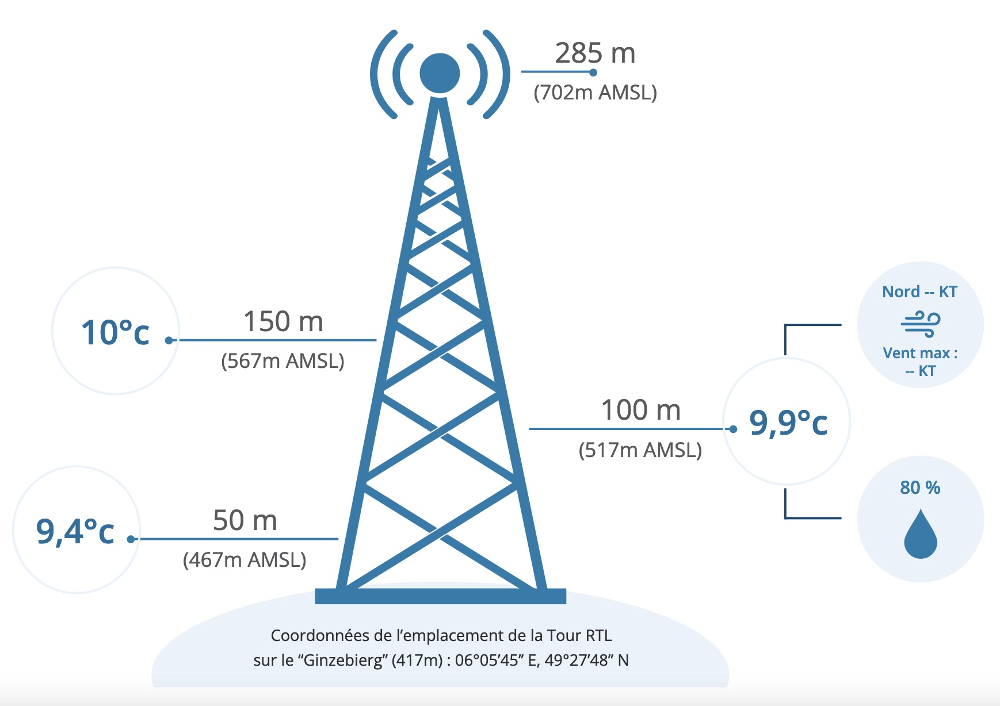Dans la page Observations Luxembourg, il y a une image porteuse d'information complexe dont la description détaillée n'est pas visible ni lisible avec un lecteur d'écran.
Images légendées
On trouve un certain nombre d'images avec des informations de copyright sur le site. Actuellement, une personne aveugle ne peut savoir à quel contenu s'applique le copyright.
Il va falloir relier l'image et l'information de copyright en utilisant l'implémentation suivante :
<figure role="group" aria-label="Document 1 - Le présent registre contenant six feuillets…">
<img src="path/to/img/jpg" alt="Document 1" />
<figcaption>
Document 1 — Le présent registre contenant six feuillets…</figcaption>
</figure>Le contenu de l'attribut alt de l'image sert ici à labelliser l'image pour la relier à sa légende, permettant aux personnes aveugles utilisant un lecteur d'écran de faire le lien entre l'image et le texte qui l'accompagne. La propriété aria-label doit reprendre le texte exact contenu dans l'élément figcaption.
Constats sur le site
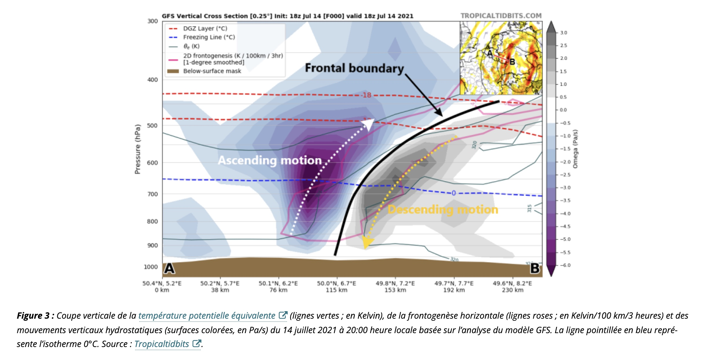Dans la page "Retour sur les pluies diluviennes du 14 et 15 juillet 2021", certaines images possèdent une légende qui n'est pas reliée à l'image correspondante.
Cadres
L'absence d'identification des cadres peut poser un problème de repérage dans la structure de la page ou de compréhension des contenus pour les personnes aveugles.
Constats sur le site
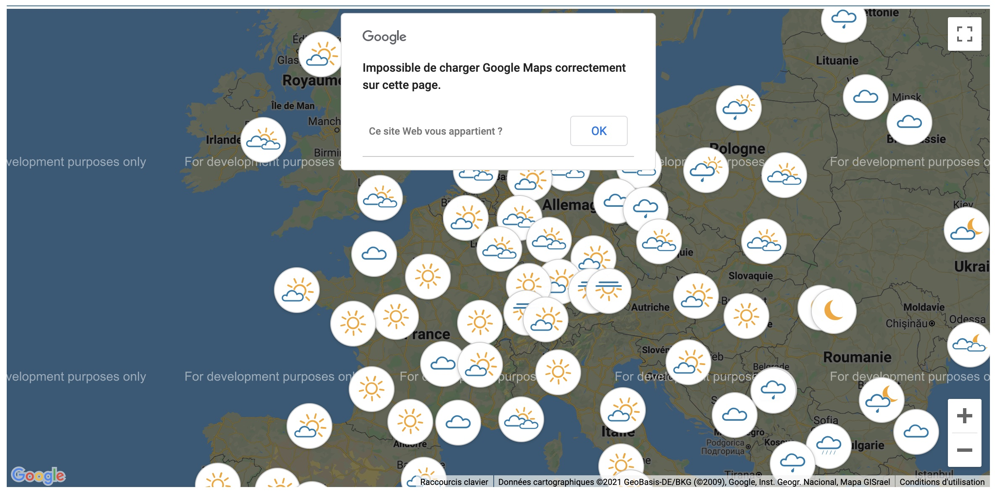Dans la page Météo en Europe, l'iframe Google Map n'a pas de titre.
Couleurs
Recommandation
Ne pas donner l'information uniquement par la couleur et utiliser des contrastes de couleurs suffisamment élevés pour les textes et les composants d'interface.
Contrastes des textes
Plusieurs couleurs présentent un rapport de contraste insuffisant, ce qui peut poser problème aux grands malvoyants et aux déficients visuels qui ont des difficultés à percevoir les couleurs ou les contrastes.
Rapports de contrastes définis par le RGAA
- Pour les textes qui ont une taille de police calculée inférieure à 24px sans effet de graisse ou une taille de police calculée inférieure à 18,5px avec effet de graisse, le rapport de contraste entre la couleur du texte (y compris le texte en image) et son arrière-plan doit être de 4.5:1, au moins.
- Pour les textes qui ont une taille de police calculée supérieure ou égale à 24px sans effet de graisse ou une taille de police calculée supérieure ou égale à 18,5px avec effet de graisse, le rapport de contraste entre la couleur du texte (y compris le texte en image) et son arrière-plan doit être de 3:1, au moins.
Vous pouvez foncer les couleurs pour obtenir le rapport de contraste exigé.
Si la charte graphique ne peut être modifiée, fournissez une méthode aux utilisateurs pour consulter le site avec des contrastes suffisants. Ceci peut être réalisé simplement avec une fonctionnalité JavaScript et une surcharge CSS des couleurs.
Vous pouvez voir un exemple de ce type de mécanisme sur le site sncf.com. Dans les réglages d'accessibilité, vous trouverez une option qui permet d'afficher le site avec des contrastes renforcés et inversés.
Constats sur le site
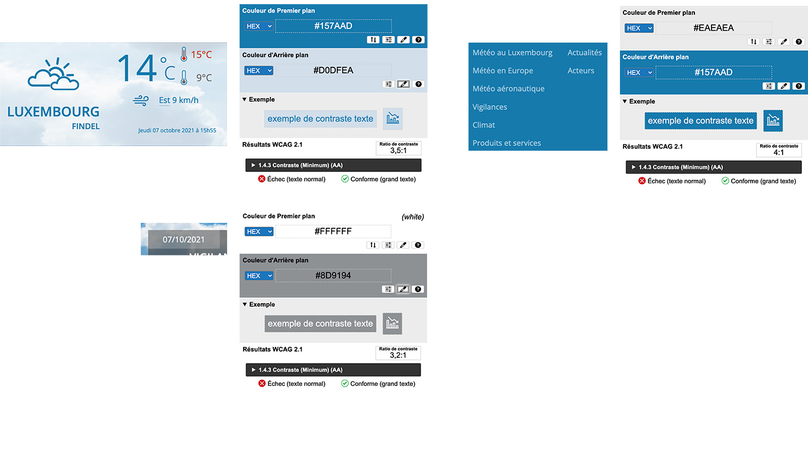Exemple dans la page d'Accueil :
- Dans le bloc de la météo du jour, les textes bleus sur fond clair avec un peu d'opacité ont un rapport de contraste de 3,5 au lieu de 4,5 ;
- Dans le bloc de la météo du jour, les textes blancs sur gris avec un peu d'opacité des onglets ont un rapport de contraste de 3,2 au lieu de 4,5 ;
- Dans le pied de page, le lien gris clair sur un fond bleu a un rapport de contraste de 4 au lieu de 4,5 ;
Contraste des composants d'interface
Les composants d'interface, les illustrations porteuses d'information ou encore les mises en couleurs porteuses d'information doivent être suffisamment contrastés pour être perçus par les utilisateurs ayant des troubles de perception des couleurs. Par exemple, une icône porteuse d'information devra avoir un rapport de contraste avec la couleur de fond de 3. De même, pour un champ de saisie de formulaire, dont la zone active est matérialisée par sa bordure, alors la couleur de cette bordure devra avoir un rapport de contraste de 3 avec la couleur de fond de la page.
Constats sur le site
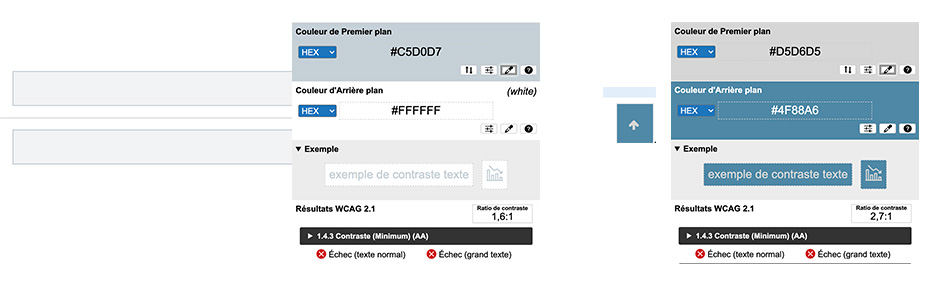Exemples dans le site :
- Dans le lien permettant de remonter en haut de l'écran, l'icône grise sur fond bleu avec un peu d'opacité a un rapport de contraste de 2,7 au lieu de 3.
- Dans le formulaire de contact, la bordure des champs de formulaire a un rapport de contraste de 1,6 par rapport à la couleur de fond de la page.
Information par la couleur
Lorsqu'une information est donnée par la couleur, il faut qu'elle soit également véhiculée par une autre méthode, par exemple par un texte qui donne la même information, pour être perçue par les utilisateurs aveugles.
Il faut également donner un indice visuel autre que la couleur, afin de répondre aux besoins des personnes déficientes visuelles (les daltoniens par exemple). Il peut s'agir d'un symbole, d'une texture, de chiffres.
Constats sur le site
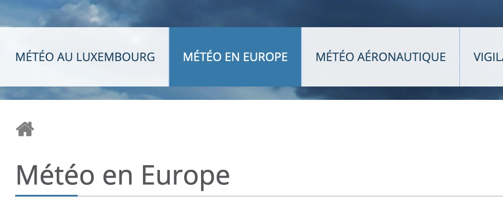Dans la navigation principale, la rubrique en cours de consultation est indiquée par la couleur uniquement.
Multimédia
Recommandation
Donner si nécessaire à chaque média temporel une transcription textuelle, des sous-titres synchronisés et une audiodescription synchronisée pertinents. Donner à chaque média non temporel une alternative textuelle pertinente. Rendre possible le contrôle de la consultation de chaque média temporel et non temporel au clavier et s'assurer de leur compatibilité avec les technologies d'assistance.
Transcription textuelle
Les vidéos et contenus audio présents sur le site ne disposent pas de transcription textuelle. Il s'agit d'un impact majeur d'accessibilité. En effet, la transcription textuelle est utile pour différents types d'utilisateurs (aveugles, malvoyants, sourds, malentendants, handicapés moteurs, handicapés cognitifs).
Cette transcription doit être un fichier structuré (docx, HTML) qui reprend toutes les informations présentes (visuelles et sonores) dans la vidéo ou le contenu audio.
Cette transcription peut être située :
- soit sur la même page que la vidéo ou fichier audio ;
- soit ailleurs sur le site. Dans ce cas, ajouter alors un lien vers la transcription sous la vidéo ou le fichier audio par exemple.
Constats sur le site
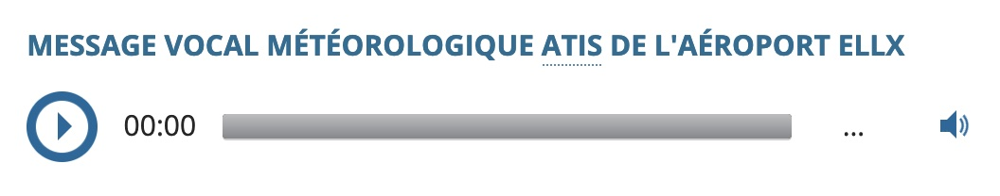Dans la page Observations Luxembourg, le message vocal n'a pas de transcription textuelle.
Contrôles
Le lecteur vidéo/audio utilisé doit lui aussi être accessible :
- il doit être utilisable au clavier et à la souris ;
- il doit proposer les contrôles essentiels (lecture/pause, contrôle du volume, activation/désactivation des sous-titres, etc.) ;
- il doit être compatible avec les API d'accessibilité ;
- ses boutons et composants d'interface porteurs d'information doivent être suffisamment contrastés (rapport de contraste de 3:1 avec la couleur d'arrière-plan contiguë).
Constats sur le site
Dans la page Observations Luxembourg, le lecteur audio n'est pas complètement utilisable au clavier ni compatible avec les technologies d'assistance.
Liens
Recommandation :
Donner des intitulés de lien explicites, grâce à des informations de contexte notamment, utiliser le titre de lien le moins possible. S'assurer que le nom visible est contenu dans le nom accessible.
Pertinence des intitulés
Un lien possède généralement un intitulé et un contexte. L'intitulé est le texte présent dans la balise <a> (ou la valeur de l'attribut alt de l'image dans le cas d'un lien-image) et le contexte du lien est représenté par le titre qui précède, le titre du lien (l'infobulle) ou tout simplement le texte dans lequel il est inséré.
Pour être considéré comme pertinent, l'intitulé d'un lien doit permettre de comprendre sa destination en prenant en compte son contexte.
Constats sur le site
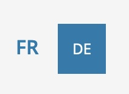Exemples dans le site :
- Les liens "FR" et "DE" ne sont pas suffisamment explicites et devraient indiquer la langue en entier ("Deutsch" par exemple) ;
Liens-images
Un lien-image est un lien dont le contenu n'est composé que d'une ou plusieurs images (balises <img>). Généralement, ces liens ne posent aucun problème aux utilisateurs voyants qui parviennent à comprendre la destination du lien grâce à l'image et son contexte. En revanche, pour une personne aveugle, ces liens doivent obligatoirement posséder un intitulé.
L'intitulé d'un lien-image est généré grâce à l'alternative de l'image contenue dans ce lien.
Pour ces liens, la technique pour fournir un intitulé dépend des cas :
- Si ces liens-images sont construits avec des balises images (
<img />), renseignez l'alternative de l'image (par exemple :<a href="https://twitter.com/example"><img src="path/to/img/png"alt="Suivez-nous sur Twitter" /></a>) - Si ces liens-images sont construits avec des balises SVG (
<svg>), alors ajoutez sur cette balise unrole="img"pour indiquer aux lecteurs d'écran qu'il s'agit bien d'une image et un intitulé pararia-label="Suivez-nous sur Twitter".
Constats sur le site
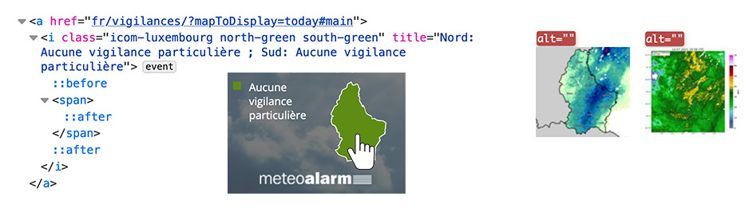Exemples dans le site :
- Dans le bloc Vigilances, le lien avec la carte du Luxembourg n'a pas d'intitulé, l'attribut
titlene pouvant être correctement restitué ; - Dans les Actualités de la page d'Accueil, on retrouve des liens-image sans intitulé, dont l'alternative de l'image est vide (attribut
alt).
Scripts
Recommandation :
Donner si nécessaire à chaque script une alternative pertinente. Rendre possible le contrôle de chaque code script au moins par le clavier et la souris et s'assurer de leur compatibilité avec les technologies d'assistance. Identifier les messages de statut lorsque c'est nécessaire.
Utilisation des boutons et des liens
Pour les aveugles et les grands malvoyants qui utilisent un lecteur d'écran, ce manque de distinction claire entre les liens et les boutons peut poser de graves problèmes.
Ainsi, un bouton implémenté sous la forme d'un lien qui déclenche une action de la page, risque de perturber l'utilisateur qui s'attendra au chargement d'une nouvelle page.
De manière générale, les liens devraient être réservés à l'affichage d'une nouvelle page ou la création de liens d'accès rapide dans le contenu. Dans tous les autres cas, l'emploi d'un bouton d'action est plus pertinent.
Enfin, chaque bouton doit avoir un nom accessible défini, soit par l'intermédiaire d'un texte (visible ou positionné hors écran) ou d'une propriété title, aria-label ou aria-labelledby.
Constats sur le site
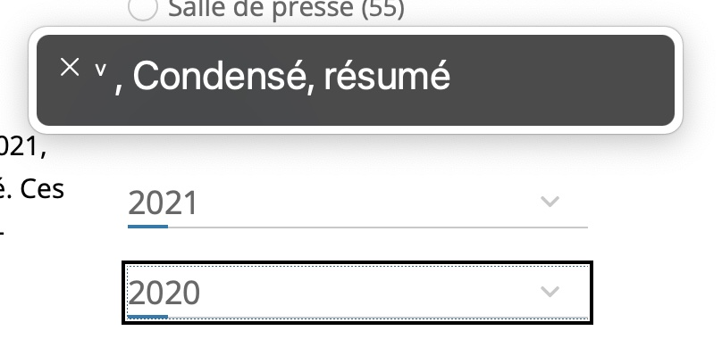Dans la page Actualités, l'intitulé des boutons pour afficher/masquer les archives n'est pas assez explicite et n'indique pas l'année par exemple.
Utilisation inappropriée de propriétés ARIA
Les propriétés ARIA sont chargées de transmettre des informations indispensables à la restitution et l'utilisation des composants développés avec JavaScript aux technologies d'assistance. Une utilisation inappropriée peut poser des problèmes de restitution notamment.
Constats sur le site
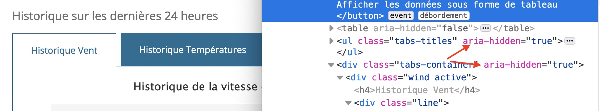Dans la page Observations Luxembourg, certains éléments ont la propriété aria-hidden="true" alors qu'ils ne devraient pas être ignorés des technologies d'assistance.
Fenêtres modales
Le site possède des fenêtres modales qui affichent du contenu. Les utilisateurs doivent pouvoir connaître l'état affiché/masqué et pouvoir naviguer à l'intérieur de la fenêtre modale.
Pour ce type d’élément, l’implémentation du motif ARIA Dialog est recommandée.
Constats sur le site
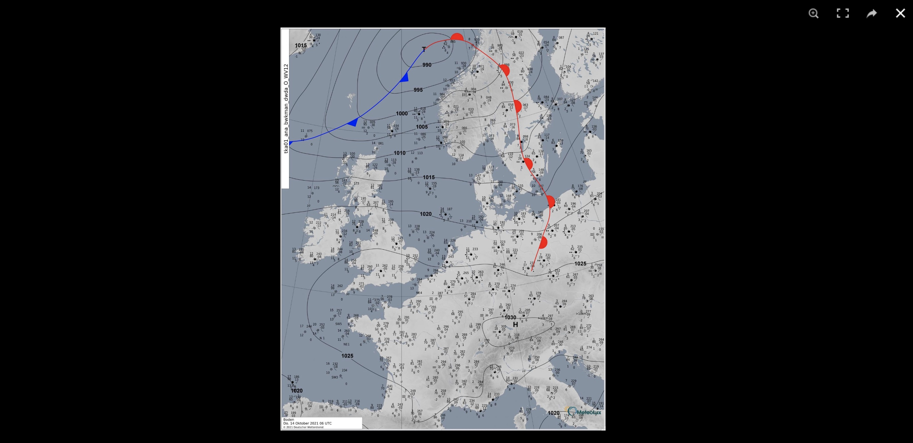Dans la page Météo en Europe, on retrouve une fenêtre modale qui ne respecte pas correctement le motif ARIA Dialog.
Gestion de la visibilité de zones
Le site possède des fonctionnalités d'affichage ou de masquage des zones de contenus. L'état affiché/masqué du contenu additionnel doit pouvoir être disponible pour les technologies d'assistance afin que les utilisateurs aveugles accèdent à cet état.
Pour ce type d’élément, l’implémentation du motif ARIA Disclosure est recommandée.
Constats sur le site
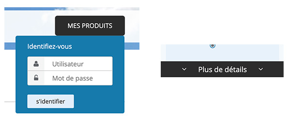Exemples dans la page d'Accueil :
- Le composant "Mes produits" affiche du contenu mais n'est pas accessible au clavier ni compatible avec les technologies d'assistance ;
- Le composant "Plus de détails" affiche/masque du contenu mais n'est pas compatible avec les technologies d'assistance.
Système d'onglets
Le site possède des systèmes d'onglets pour gérer l'affichage de certaines zones de contenus. La sélection d'un onglet et l'affichage de son contenu doivent pouvoir être restitués aux technologies d'assistance afin que les utilisateurs aveugles accèdent à ces informations.
Pour ce type d’élément, l’implémentation du motif ARIA Tabs est recommandée.
Constats sur le site
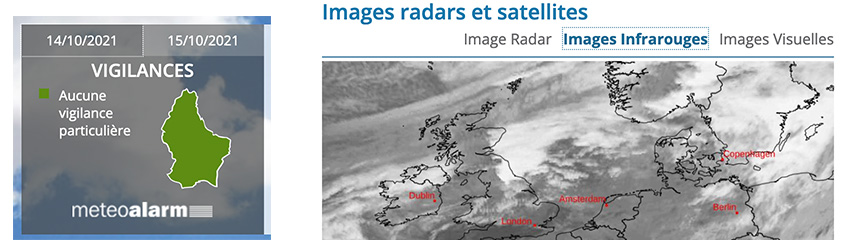Exemples dans le site :
Éléments obligatoires
Recommandation
Vérifier que chaque page web a un code valide selon le type de document, un titre pertinent et une indication de langue par défaut. Vérifier que les balises ne sont pas utilisées uniquement à des fins de présentation, que les changements de langues et de direction de sens de lecture sont indiqués.
Titre de la page
Le titre de la page (visible dans l'onglet du navigateur) est un élément de repère dans le site web. Pour les utilisateurs de lecteurs d'écran (utilisateurs aveugles ou grands malvoyants), c'est le premier élément restitué par le lecteur d'écran au chargement de la page. Cela permet de donner du contexte aux utilisateurs qui n'ont pas une vision globale de la page. Pour les utilisateurs avec des troubles de la mémoire, c'est l'information à laquelle ils accèdent lorsqu'ils naviguent avec l'historique de navigation du navigateur. Il est donc essentiel d'avoir des titres de pages pertinents, concis et très souvent uniques dans le site, et qui reflètent de la position de l'utilisateur dans le site web.
Il est des cas particuliers, comme les pages dont le contenu est une liste de résultats paginés (ex. : les résultats de recherche), pour lesquels le titre doit refléter la nature de la recherche ainsi que le numéro de page en cours de consultation.
Constats sur le site
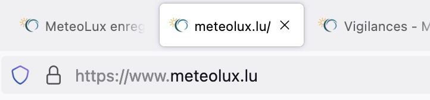Exemples sur le site :
- La page d'Accueil n'a pas de titre, la balise
<title>est absente ; - Dans la page Actualités, le titre devrait reprendre le numéro de la page affichée.
Indication de langue
Les lecteurs d'écran utilisent les indications de langue pour vocaliser le contenu dans la langue définie. La page doit contenir une définition de langue principale (généralement sur l'élément html).
Ensuite, les éléments de langue étrangère présents dans le contenu doivent être signalés. Si on trouve dans la page des termes absents du dictionnaire de la langue principale de la page, il faut les identifier afin que le lecteur d'écran les restitue dans la langue appropriée. En effet, une mauvaise prononciation pourrait mener à des incompréhensions pour les utilisateurs qui reposent uniquement sur des restitutions orales. Les noms propres sont exclus de cette obligation.
Constats sur le site

Exemples dans le site :
- Il y a un attribut
lang="FR"sur le lien "FR" alors qu'on est déjà sur la version française du site. Le changement de langue devrait être indiqué seulement s'il y a un ou plusieurs termes dans une autre langue que celle par défaut dans la page ; - Dans la page "Aspects légaux", il y a un lien dont l'intitulé est en anglais.
Validité du code
Les technologies d'assistance, comme les lecteurs d'écran ou les systèmes de contrôle à la voix, s'appuient sur le code des pages pour générer les restitutions et les interactions avec l'utilisateur. Un lecteur d'écran va exploiter le code HTML fourni par le navigateur et les informations accessibles au moyen des API d'accessibilité du système.
Si le code comporte des erreurs (balises mal fermées par exemple), il y a un risque que les fonctionnalités du lecteur d'écran soient impactées, comme la navigation de lien en lien par exemple.
Pour vérifier la conformité d'une page, vous pouvez utiliser le validateur mis à disposition par le W3C.
Constats sur le site
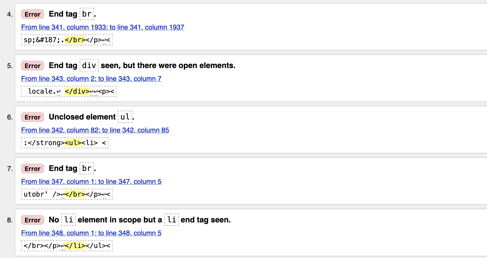Dans la page "Retour sur les pluies diluviennes du 14 et 15 juillet 2021", il y a des erreurs HTML liées à des problèmes de fermeture de balises HTML.
Balises utilisées à des fins de présentation
Les éléments de structure HTML ont chacun une sémantique particulière (paragraphe, titre, image, lien, etc.). Si les éléments sont mal employés (détournés de leur utilité première), cela peut poser des problèmes aux utilisateurs qui naviguent à l'aide d'une technologie d'assistance (lecteur d'écran, plug-in…). En effet, les technologies d'assistance disposent de raccourcis permettant de naviguer rapidement entre certains types d'éléments (paragraphes, titres, listes, etc.). Si ces éléments sont mal employés, les utilisateurs ne peuvent pas utiliser ces fonctionnalités de repère et de navigation dans le contenu.
Constats sur le site
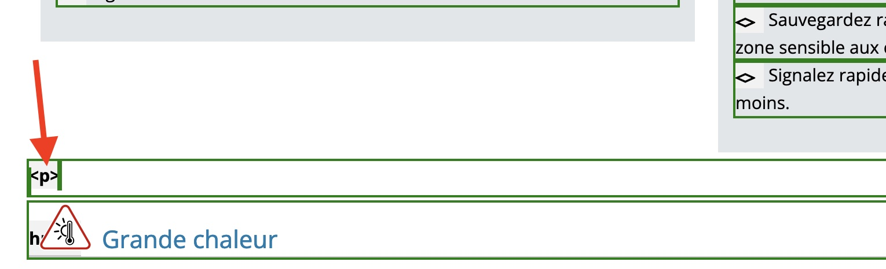Dans la page Dangers météorologiques et risques atmosphériques, on retrouve des balises <p> vides pour créer des effets de présentation (espacement).
Structuration de l'information
Recommandation
Utiliser des titres, des listes, des abréviations et des citations pour structurer l'information. S'assurer que la structure du document est cohérente.
Titres
Le titrage des contenus est une étape importante dans la structuration de ces contenus. Cela répond à deux besoins :
- identifier rapidement un contenu recherché ;
- naviguer rapidement dans le contenu en se déplaçant de titre en titre.
Un titrage correct fournit à l'utilisateur d'un lecteur d'écran un plan du document et lui permet de naviguer de titre en titre pour se déplacer plus rapidement dans le contenu de la page.
Pour valider la structure de votre page, vous pouvez utiliser l'extension Firefox HeadingsMap. Lorsque l'extension est active, sélectionnez l'onglet « Headings » et vérifiez la cohérence et l'imbrication des titres.
Constats sur le site
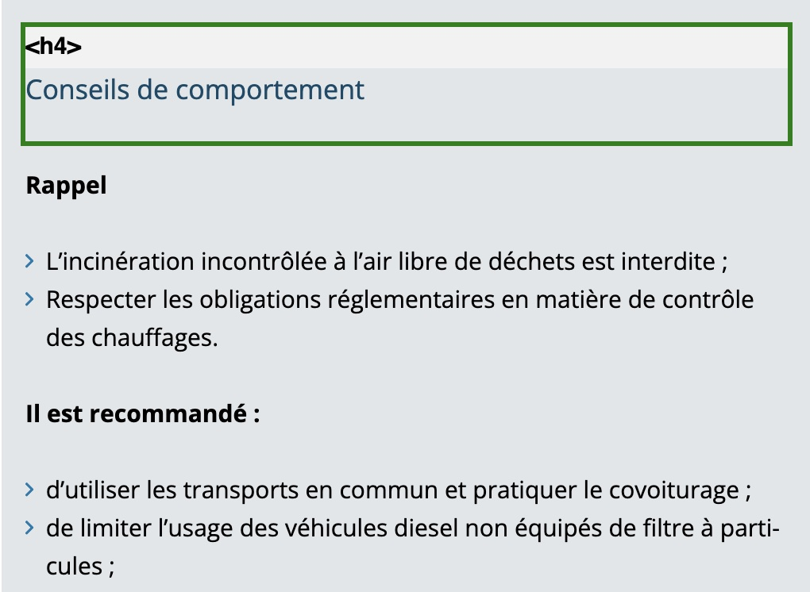Dans la page Dangers météorologiques et risques atmosphériques, certains termes devraient être structurés sous forme de titre avec une balise <hX>, par exemple "Rappel", "Il est recommandé " ou encore "En zone inondable".
Listes
La structuration en listes permet aux utilisateurs de lecteurs d'écran de consulter plus rapidement le contenu, grâce à des raccourcis spécifiques, et d'accéder directement à une liste ou de la passer sans avoir à en parcourir tous les items.
Constats sur le site
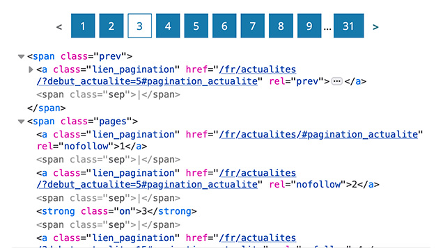Exemples dans le site :
- Dans la page Actualités, la suite de liens de la pagination ;
Structure du document
L'utilisation correcte des balises HTML5 et des landmarks ARIA va permettre d'enrichir la restitution pour les utilisateurs aveugles qui ne perçoivent pas les mises en forme : la navigation principale ne sera plus perçue simplement comme une liste de liens, elle sera restituée à l'utilisateur comme un élément de navigation, par l'intermédiaire du lecteur d'écran qui annoncera « région » ou « repère ».
De plus, ces marqueurs sémantiques vont également constituer des éléments de navigation rapide dans la page. Grâce à un raccourci clavier, certains utilisateurs vont pouvoir naviguer plus rapidement entre les régions qui auront été ainsi identifiées.
Constats sur le site
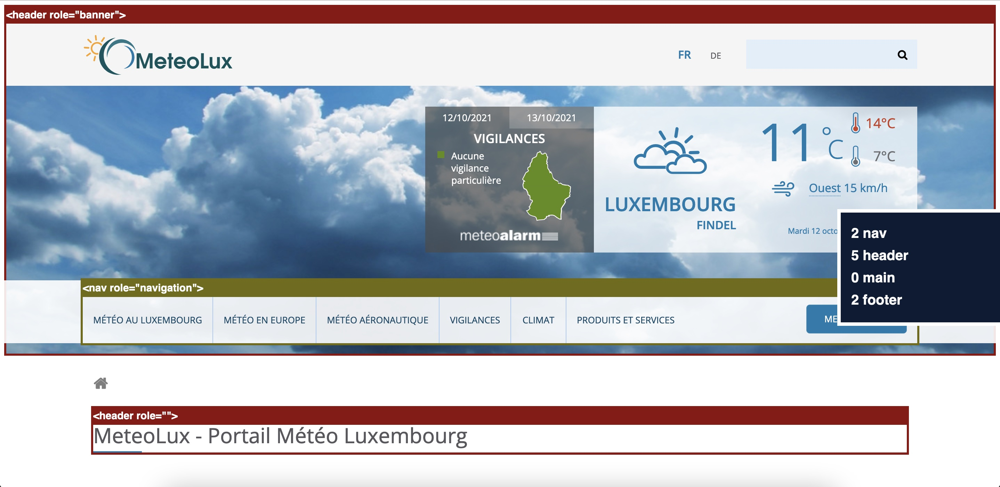Exemples dans le site :
- Il n'y a pas d'élément
<main>autour de la zone de contenu principal des pages ; - Les liens d'évitement devraient être structurés dans un élément
nav; - Le fil d'Ariane devrait être structuré dans un élément
nav;
Présentation de l'information
Recommandation
Utiliser des feuilles de styles pour contrôler la présentation de l'information. Vérifier l'effet de l'agrandissement des tailles des caractères sur la lisibilité. S'assurer que les liens sont correctement identifiables, que la prise de focus est signalée, que l'interlignage est suffisant et donner la possibilité à l'utilisateur de contrôler la justification des textes. S'assurer que les textes cachés sont correctement restitués et que l'information n'est pas donnée uniquement par la forme ou la position d'un élément. S'assurer que les contenus sont lisibles et utilisables dans une fenêtre de largeur réduite. Veiller à ce que l'application de paramètres typographiques n'entraîne pas la perte de contenu ou de fonctionnalité. S'assurer que les contenus qui apparaissent au survol et à la prise de focus puissent être contrôlés par l'utilisateur.
Utilisation de CSS exclusivement
Certains utilisateurs qui présentent des troubles de la lecture (personnes dyslexiques par exemple) vont avoir besoin d'adapter la présentation des pages avec leurs propres mises en forme. Cela est possible sans difficulté si le site web utilise exclusivement les feuilles de styles CSS pour réaliser les mises en forme. Cependant, l'utilisation d'attributs et balises HTML de mise en forme rend ces adaptations plus compliquées, sinon impossibles.
Le RGAA donne la liste des attributs et balises qu'il est interdit d'utiliser.
Constats sur le site
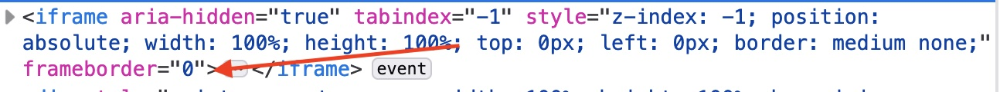Dans la page Contact, on retrouve l'utilisation de l'attribut frameborder.
Contenu visible sans les feuilles de styles
Des contenus informatifs insérés avec CSS (avec des images de fond contenant du texte en image par exemple) peuvent ne pas être restitués par les lecteurs d'écran ou les systèmes de loupes vocalisés.
Constats sur le site
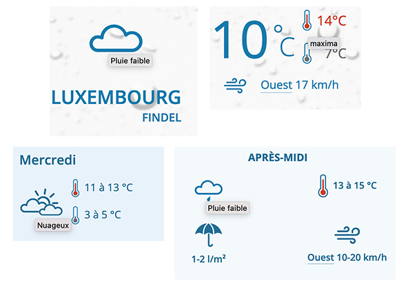Dans la page d'Accueil, on retrouve des informations insérées avec CSS et sans alternative. À savoir que l'attribut title ne peut pas être restitué par les lecteurs d'écran sur un élément non cliquable (<a>, <button>).
- Les icônes annonçant la météo du jour (nuageux, ensoleillé, pluie faible, etc.) ;
- Les icônes annonçant les températures minimales et les températures maximales ;
- Les icônes annonçant le taux de précipitation ou de vent.
Agrandissement des tailles de texte
Certaines personnes déficientes visuelles, également des personnes ayant des difficultés de lecture comme les personnes dyslexiques, ont besoin d'adapter la taille du texte à l'écran.
L'agrandissement des caractères ne doit pas provoquer de perte d'informations. À 200%, le contenu doit rester lisible et compréhensible, toutes les informations doivent rester présentes.
Il existe plusieurs méthodes pour contrôler l'agrandissement des caractères :
- La fonction d'agrandissement du texte du navigateur (le zoom texte) ;
- Les fonctions de zoom graphique du navigateur ;
- Un composant d'interface propre au site permettant d'agrandir le texte ou de zoomer.
Constats sur le site
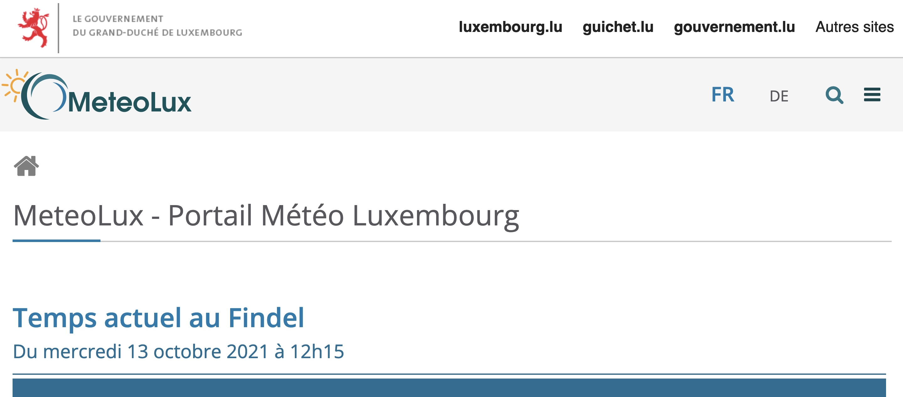Par exemple, lorsqu'on zoome jusqu'à 200%, le menu principal n'est plus visible et ne peut être activé.
Liens dont la nature n'est pas évidente
Un lien dont la nature n'est pas évidente est un lien qui peut être confondu avec un texte normal par certains utilisateurs ne percevant pas ou mal les couleurs, lorsqu'il est signalé uniquement par la couleur.
Les personnes déficientes visuelles peuvent ignorer ces liens puisque ceux-ci ne sont pas visuellement discernables du reste du texte dans lequel ils sont insérés.
Constats sur le site
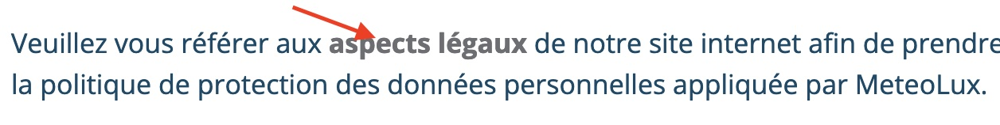Dans la page Mes produits (connexion), on retrouve un lien pas suffisamment visible par rapport à son texte environnant.
Visibilité de la prise de focus
Les personnes avec un handicap moteur qui naviguent au clavier peuvent rencontrer des difficultés considérables à utiliser du contenu si elles ne sont pas en mesure de repérer l'indication visuelle du focus et ses déplacements.
Constats sur le site
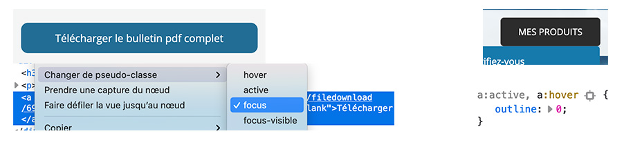Exemples dans le site :
- Dans la page d'Accueil, la prise de focus n'est pas visible sur le bouton "Télécharger le bulletin pdf complet" par exemple ;
- Dans la navigation, la prise de focus n'est pas visible sur le bouton "Mes produits".
Largeur réduite
Il s'agit ici de tester la capacité des contenus à se réorganiser lorsqu'un utilisateur malvoyant doit réaliser un zoom graphique de 400%. À ce titre, on teste la lisibilité des contenus dans une fenêtre de largeur réduite à 320px.
On s'assure que l'utilisateur a accès à tous les contenus et que tous les contenus sont lisibles sans avoir recours à la barre de défilement horizontale.
Constats sur le site
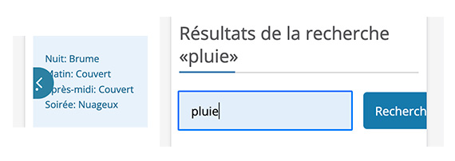Exemples dans le site :
- Dans la page d'Accueil, le bouton "Précédent" du bloc "Prévisions pour les 5 prochains jours" masque un peu le contenu (les mots "Matin" et "Après-midi" surtout) ;
- Dans la page de résultats de recherche, le bouton "Rechercher" est tronqué.
Paramètres typographiques
Les utilisateurs malvoyants et/ou dyslexiques ont souvent recours à des adaptations de la présentation des textes. Pour cela, on doit s'assurer que de tels paramètres ne viennent pas perturber leur lecture sur le site.
Les présentations doivent supporter l'application de paramètres typographiques visant à augmenter les interlignages, interlettrages, les espaces entre les mots et entre les paragraphes. L'application de ces paramètres ne doit pas entraîner la perte de contenus ou de fonctionnalité :
- L'interlignage augmenté de 1,5 fois la taille de la police ;
- L'espacement entre les paragraphes augmenté de 2 fois la taille de la police ;
- L'espacement des lettres augmenté de 0,12 fois la taille de la police ;
- L'espacement des mots augmenté jusqu'à 0,16 fois la taille de la police.
Constats sur le site
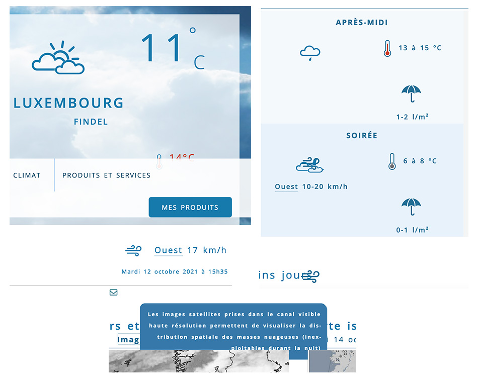Exemples sur le site :
- Dans la page d'Accueil, les contenus des blocs "Météo du jour" et "Prévisions" débordent sur d'autres blocs et deviennent compliqués à lire ;
- Dans la page Météo en Europe, le contenu des tooltips est parfois légèrement tronqué.
Contenus additionnels au survol et au focus
Les contenus additionnels qui apparaissent au survol ou à la prise de focus (par exemple, un menu déroulant, une infobulle d'information), peuvent être contrôlés par l'utilisateur. Par exemple, les utilisateurs malvoyants qui se servent d'une loupe d'écran peuvent déclencher l'affichage accidentel des contenus qui apparaissent au survol et ces affichages non désirés perturbent la consultation pour ces utilisateurs. L'utilisateur doit alors disposer d'un moyen simple pour les masquer et continuer sa consultation.
Également, en utilisant une loupe d'écran, il est probable que le contenu additionnel soit en fait apparu en dehors de la zone de zoom de la loupe, l'utilisateur doit pouvoir survoler le contenu additionnel à la souris.
Constats sur le site
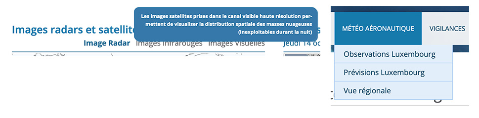Exemples sur le site :
- Dans la navigation principale, les sous-menus s'affichent au survol uniquement et ne peuvent être contrôlés au clavier par l'utilisateur ;
- Dans la page Météo en Europe, les tooltips ne peuvent pas être contrôlés au clavier.
Formulaires
Recommandation :
Associer pour chaque formulaire chacun de ses champs à son étiquette, grouper les champs dans des blocs d'informations de même nature, regrouper les items de même nature dans les listes de choix, donner à chaque bouton un intitulé explicite. Vérifier la présence d'aide à la saisie, s'assurer que le contrôle de saisie est accessible et que l'utilisateur peut contrôler les données à caractère financier, juridique ou personnel.
Étiquettes et champs
Les champs de formulaires doivent tous posséder des étiquettes correctement reliées.
Une étiquette de champ est un texte situé à proximité du champ de formulaire qui permet de connaître la nature, le type ou le format des informations attendues.
De cette manière, lorsqu'un utilisateur entre dans le champ de saisie avec un lecteur d'écran, le lecteur d'écran lit le contenu de l'étiquette. L'utilisateur comprend alors ce qu'il doit saisir.
Sans cela, même si une étiquette est présente visuellement, l'utilisateur entendra « champ de saisie vide » en entrant dans le champ et ne saura donc pas quoi saisir.
Constats sur le site
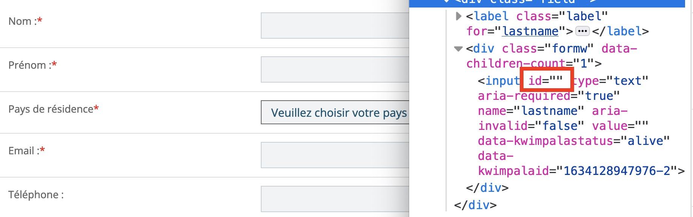Dans le formulaire de contact, les champs de formulaire ne sont pas reliés à leur étiquette.
Étiquettes et champs accolés
Le RGAA 4 exige que chaque étiquette et le champ qu'elle contrôle soient accolés. En effet, si l'étiquette et son champ sont trop éloignés, les utilisateurs malvoyants qui utilisent une loupe d'écran peuvent échouer à faire correspondre l'étiquette et son champ, et donc ne pas saisir les données attendues dans les bons champs.
Constats sur le site
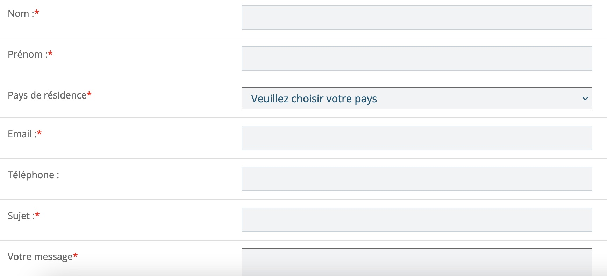Dans le formulaire de contact, les étiquettes ne sont pas accolées aux champs concernés.
Contrôle de saisie et aide à la saisie
Tous les champs obligatoires doivent être identifiés préalablement à toute validation de l’utilisateur.
Pour les champs qui attendent un format de saisie particulier pour être validés, ce format doit être spécifié à l’utilisateur par un passage de texte visible à proximité du champ. De plus, si l’utilisateur commet une erreur sur ce champ, alors le message d’erreur doit présenter un exemple réel de saisie.
Enfin, les messages d'erreur de saisie des champs de formulaire doivent être liés correctement aux champs en erreur.
Constats sur le site
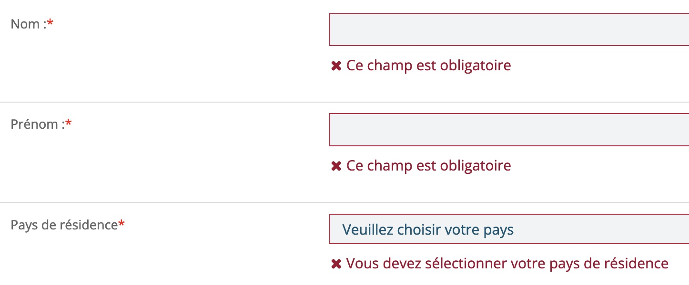Exemples dans le site :
- Dans le formulaire de contact, il n'y a pas de message qui indique que les champs marqués d'un * sont obligatoires ;
- Dans le formulaire de contact, les messages d'erreurs ne sont pas liés à leur champ de saisie respectif à l'aide de la propriété
aria-describedby; - Dans le formulaire de contact, il n'y a pas d'exemple de saisie pour les champs qui attendent un format particulier (exemple : e-mail).
Identification des données attendues
Certains utilisateurs qui ont des troubles d'accès au langage verbal (paralysie cérébrale, aphasie par exemple) auront des difficultés à accéder au sens des termes écrits. Ainsi, pour leur permettre de remplacer les étiquettes présentes dans les formulaires par des étiquettes (verbales ou imagées) qu'ils connaissent, il est nécessaire d'identifier les champs avec un attribut particulier, de sorte qu'une technologie d'assistance pourra réaliser la personnalisation du formulaire nécessaire à l'utilisateur.
L'identification de ces champs permet également aux utilisateurs d'employer des outils pour remplir automatiquement les champs identifiés avec des valeurs de l'utilisateur.
On ne va rechercher que les champs qui attendent une donnée personnelle. Le RGAA demande d'utiliser l'attribut autocomplete et il fournit l'ensemble des valeurs possibles pour l'attribut.
Constats sur le site
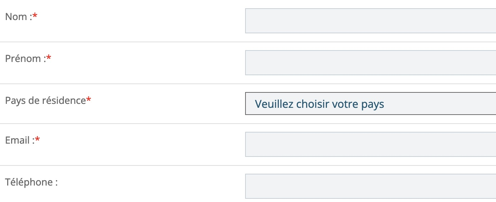Exemples dans le site :
- Dans le formulaire de contact, les champs "Nom", "Prénom", "Pays de résidence", "Email" ou encore "Téléphone" n'ont pas d'attribut autocomplete.
Navigation
Recommandation :
Faciliter la navigation dans un ensemble de pages par au moins deux systèmes de navigation différents (menu de navigation, plan du site ou moteur de recherche), un fil d'Ariane et l'indication de la page active dans le menu de navigation. Identifier les groupes de liens importants et la zone de contenu et donner la possibilité de les éviter par des liens de navigation interne. S'assurer que l'ordre de tabulation est cohérent et que la page ne comporte pas de piège au clavier. S'assurer que les raccourcis clavier qui utilisent une seule touche sont contrôlables par l'utilisateur.
Landmarks ARIA
Pour fournir des points de repère aux utilisateurs aveugles, il faudra également implémenter les landmarks ARIA sur les balises HTML 5 de la page.
Constats sur le site
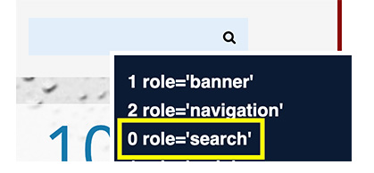Dans l'en-tête du site, le moteur de recherche n'a pas de landmarks ARIA role="search".
Consultation
Recommandation
Vérifier que l'utilisateur a le contrôle des procédés de rafraîchissement, des changements brusques de luminosité, des ouvertures de nouvelles fenêtres et des contenus en mouvement ou clignotants. Ne pas faire dépendre l'accomplissement d'une tâche d'une limite de temps sauf si elle est essentielle et s'assurer que les données saisies sont récupérées après une interruption de session authentifiée. Proposer des versions accessibles ou rendre accessibles les documents en téléchargement. S'assurer que la consultation n'est pas dépendante de l'orientation de l'écran. Toujours proposer un geste simple en alternative d'un geste complexe permettant de réaliser une action.
Documents en téléchargement
Assurez-vous que chaque document soit accessible (cf. les Guides de créations de documents bureautiques accessibles), ou qu'il dispose d'une alternative accessible proposant le même contenu (par exemple, une version HTML correctement structurée).
Constats sur le site
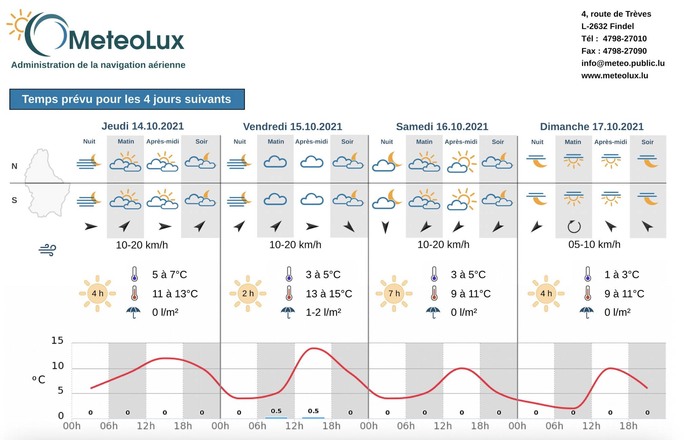Dans la page d'Accueil, on retrouve un document PDF, "Edition_grand_public_de_14_heures.pdf", sans titre et qui contient des images complexes porteuses d'information sans retranscription textuelle.
Contenus en mouvement ou clignotants
Les contenus en mouvement peuvent être problématiques pour les utilisateurs avec des difficultés de lecture. En effet, un contenu qui défile trop rapidement empêche d'accéder de fait à l'information. De plus, le mouvement empêche les personnes avec un déficit de l'attention de lire le reste de la page.
Il faut alors permettre aux utilisateurs d'arrêter et de redémarrer le contenu en mouvement , ou d'afficher tout le contenu sans le mouvement ou de masquer le contenu en mouvement et de le réafficher.
Constats sur le site
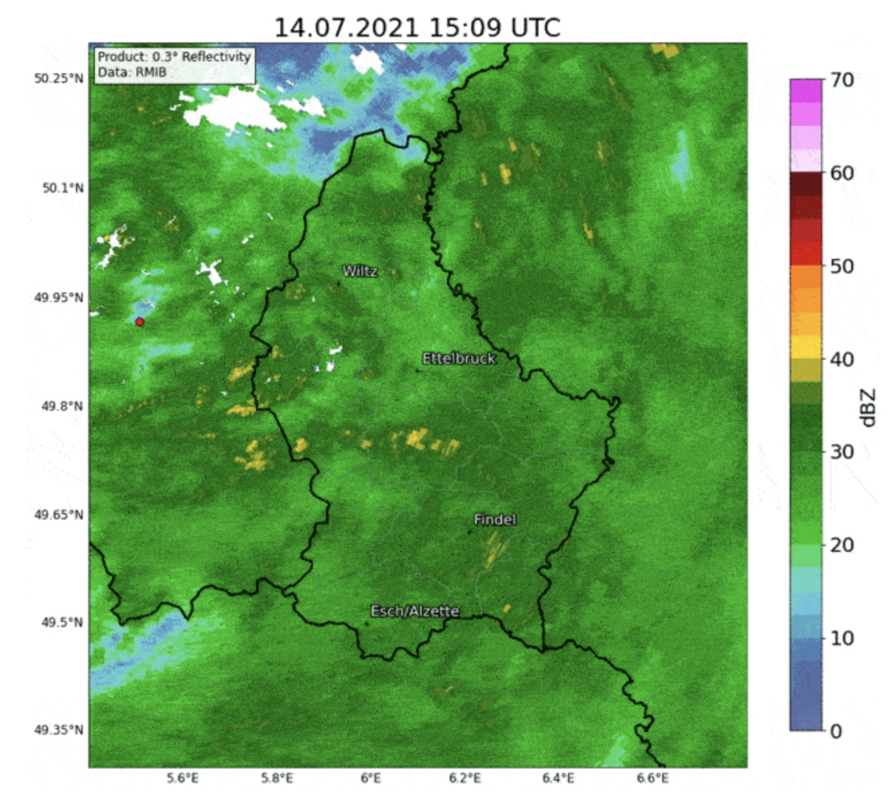Dans la page "Retour sur les pluies diluviennes du 14 et 15 juillet 2021", il y a une image en mouvement ou clignotante qui ne peut être contrôlée par l'utilisateur.